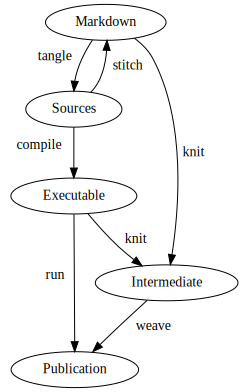
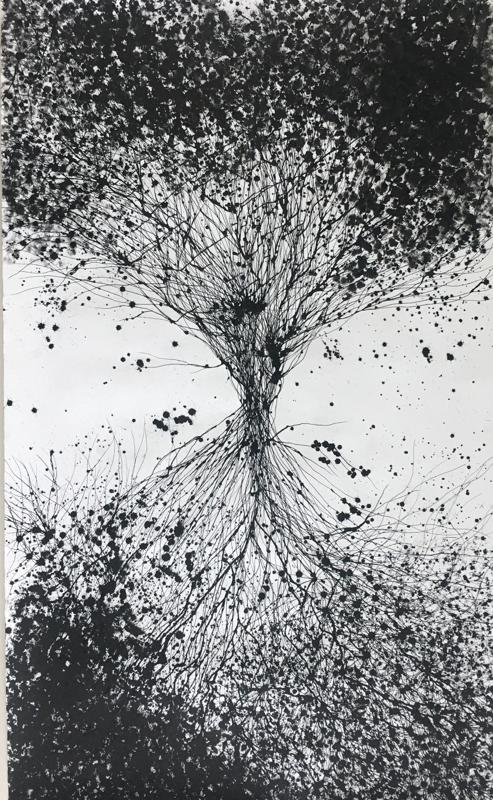
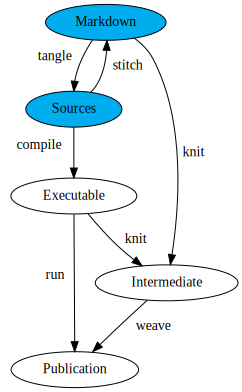

Literate Programming
why it matters, and how to make it easy
Johan Hidding
Literate Programming
Donald Knuth

Why Literate programming?

… nobody wants to admit writing an illiterate program …
Motivation
- scientific rigour
- Should extend to software \(\to\) “Open Science”
- epistemology
- Explain it to a six-year old
- programming literacy
- Read other people’s code
Books
Existing tools
- Noweb
- Emacs Org-mode
- KnitR
- Jupyter
Tools and workflow
- Pandoc (Pandoc Development Team 2019)
- Lua filters
- Entangled

Hello, World!
Introduction
- Literate programming (Knuth 1984).
- System of references: noweb (Ramsey 1994).
References
- References inside code blocks:
<<...>>
References
- Code-blocks have names
References
- And can be appended to
Tangling
- Code blocks are tangled into source files.
Entangled
Entangled
- Tangle and stitch
- Editor independent
- Language independent
- jhidding.github.io/enTangleD

Entangled
- Tangle: generates source code from Markdown
- Stitch: changes are pushed back to the Markdown
- jhidding.github.io/enTangleD

Bibliography
Knuth, Donald Ervin. 1984. “Literate Programming.” The Computer Journal 27 (2): 97–111.
Pandoc Development Team. 2019. Pandoc: A Universal Document Converter. http://pandoc.org.
Ramsey, Norman. 1994. “Literate Programming Simplified.” IEEE Software 11 (5): 97–105.